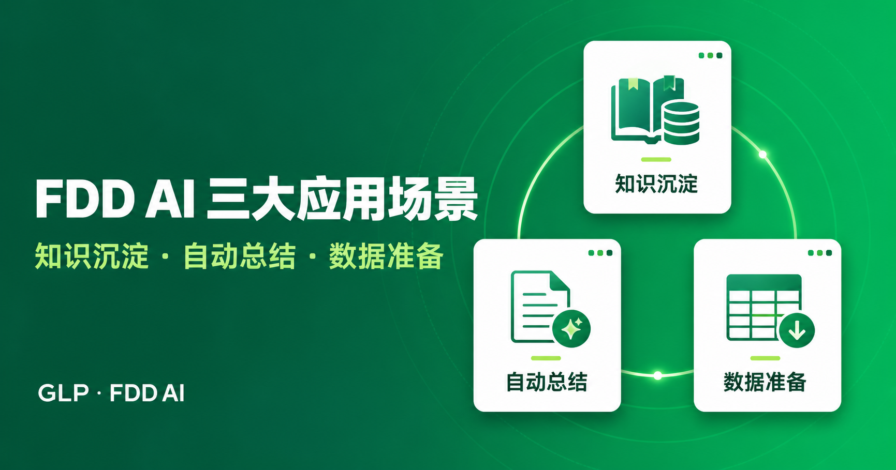

CG
A C L I E N T ' S V I E W
AI 落地的核心
是让 AI 更聪明吗？
SHARING · NOT SELLING
SPEAKER
Chen Gao · 高 晨
ROLE
VP · Big Data & AI · GLP
VENUE
飞书 AI Solution · Workshop
DATE
2026.09.23
01 · 我是谁
如果我是你的客户，
你会怎么向我提案？
高 晨
CHEN GAO
▸ VP · Big Data & AI · GLP（普洛斯）
▸ ex-CDO · Decathlon China · 迪卡侬
▸ ex-Alibaba · 盒马 / 夸克 / 阿里云 / 天猫
▸ ex-J&J Ethicon · ex-Novartis · ex-Univ. of Washington
▸ ex-CDO · Decathlon China · 迪卡侬
▸ ex-Alibaba · 盒马 / 夸克 / 阿里云 / 天猫
▸ ex-J&J Ethicon · ex-Novartis · ex-Univ. of Washington
π
π-SHAPED EXPERT
跨 10 大行业，在 大数据 与 AI
两条专业线上近 20 年深耕。
两条专业线上近 20 年深耕。
物流地产
REAL ESTATE
新能源
NEW ENERGY
IDC
DATA CENTER
金融
FINANCE
零售
Decathlon
电商
盒马 · 天猫
互联网
夸克 · UC
云计算
阿里云
医疗
J&J · Novartis
教育
U. Washington
BIG DATA大数据
- 数据基座 / 中台
- 多维建模
- BI & Analytics
- 归因 · 预测
- 数据治理 · 合规
AI人工智能
- AI 中台 · 路线图
- RAG · Agent · Skill
- ML / DL
- 选址 · 定价 · 排班
- AI 合规治理
一横 = 10 大行业 · 两纵 = 大数据 · AI
02 · 我是一个 ACTIVE SHARER
为什么我愿意
把坑都讲出来？
因为 AI 落地这件事，成功经验很难复制，失败经验却高度通用。
这几年我在内部、行业会议、厂商大会上讲过很多次 — 今天这场，我想讲得更实一点。
这几年我在内部、行业会议、厂商大会上讲过很多次 — 今天这场，我想讲得更实一点。

博鳌亚洲论坛 · 2026 年年会

陆家嘴论坛 · 零售 + AI

上海美商会 · 「AI at Work」

Robo Space · AI 如何重构智慧场景
腾讯 AI 会议 · 企业 AI 落地
AWS · 参展分享
集团全员会 · AI Design Token
内部 · 碳基生物 AI 学习小组
DT All Hands
Kellogg / Guanghua EMBA
// 今天全程 可以随时打断 — 每一页都是一个问题，不是一个结论。
03 · 我们做了哪些开发
6 个月，一个团队
能做出多少 AI 应用？
0
AI 项目
立项 / 在排期表内
0
应用接入 AI Portal
2026.03 → 今
0+
人参与共建
全部非专职
0
已结束
另有 49 个进行中

DD AI · 投资尽调智能工作台 / 知识沉淀 · 自动总结 · 数据准备
FDD Checklist 优化工作台 / 历史问题提炼 · 缺失项与优化项审阅
「今天的 AI Coding，仍停留在 1882 年的电灯时代。」
吴泳铭 · 2026 云栖大会主论坛 · 昨天
// 电最早只是用来替代煤油灯 — 所以我们这些，也只是煤油灯的替代品。
03 · 我们做了哪些开发 / AI-BUDDY 3.0
从「能跑」到「能上生产」，
差的是什么？
0
次代码提交
2026.04.03 → 08.21
0万行
源码与文档
31 份方案 · 46 个测试
0
次重构
还早期架构债
0
首周使用用户
无阻断故障 · 无安全事件
沙箱三代演进 · 每一次都是被真实约束推着走
| 本地 Docker跑得通，但只能跑在单机上 | → | 大赛原型 |
| 火山云 ECI + NAS身份可伪造，验证过能读到别人的数据 | → | 迁云 |
| VEFAAS 云沙箱 + TOS签名认证不可伪造，凭证不进沙箱 | → | 生产形态 |
安全是分水岭，不是阻碍
!沙箱内不存放任何真实密钥
代理执行整体搬到平台侧；临时令牌与沙箱生命周期绑定，闲置 10 分钟即销毁，令牌同步失效。
!先审后执行，不是事后补审
内容双向审查管「说了什么」，工具调用同步硬拦截管「做了什么」。
「安全左移的成本收益比最高。请『对手』早进场，是最便宜的保险。」
AI-Buddy 3.0 复盘 · 学到了 · 第 5 条
04 · 我们有哪些有趣的 IDEA
一个 AI 团队的
「下班时间」在干嘛？
0
个调研课题
碳基生物 AI 学习小组
0
位研究者
自愿认领 · 轮流分享
0
篇经验分享
另有 27 工具 · 4 理论
AI 硬件 · 墨水屏用量看板
ESP32-S3 + INMP441 · 声音波形可视化
Neo4j · Graph Engineering
WebGL · 流体噪声背景（已用在 AI Portal 上）
曲名星 · 8 种策略给项目起名
GLP SkillsHub · 自托管 Skills 注册中心
Remotion · AI 生视频
10 倍速学习 · 视频字幕抓取 + AI 提炼
A他们有一个优先级标签叫「不值得分享」
83 个课题里，有 1 个被打上了这个标。有判断力的组织，才会给东西打这个标。
BMono 一站平台 · 那一天的时间线
10:00 开会沟通需求 → 10:26 建群 → 14:19 需求明确 → 16:29 第一版功能 → 16:59 部署完成，发给业务试用。
// 应用发布周期：一周 → 1 小时。复盘原话：「维护一个好的 handbook，让接入事半功倍。」
05 · 我们踩过哪些坑
9 周 · 93 人天 · 5 项硬指标全达成
那最贵的一段路是什么？
答案不是模型，不是算力，是 口径。指标范围确认 1-2 周、口径梳理 4 周、报表开发自测 2 周 — 这段时间无论自研还是买通用平台，都省不掉。
四个真实翻车点 · 现在全部由代码判定
①「大上海」被当成上海
AI 凭语义判断约等于上海，直接查上海并返回一份文不对题的报告。语气笃定，前提是错的 — 这是最难被发现的一类失败。
②「深圳保税区」
「保税区」是地名的一部分。代码先做三级精确匹配，全失败了才去查关键字，所以真实存在的「福田保税区」不会被误伤。
③「空港」
九个城市共用的园区名。模糊检索式系统会静默选中相似度最高的那个 — 这里强制中断，要求用户指定城市。
④「北京」查不到
必须死咬「不是查无此数据，是没有权限」，防止用户把权限问题当成打错字，反复换地名重试。
上下文超限，第 7 次调阈值才找到真凶 — 是一张 226 万字符的图片撑爆了上下文。调阈值只是治标。
坑 ⑤ 工程与交付 · 「盲修 → 修不动 → 加日志 → 找到根因」，在六个模块上重复了六遍
05 · 我们踩过哪些坑 / 一条主线
你的场景，真的需要
一个会说话的模型吗？
六类坑看着不相干。但排在一起会发现 —
每一个都是「某处该由代码决定的事，
被交给了模型、或者运气」。
每一个都是「某处该由代码决定的事，
被交给了模型、或者运气」。
我们把判断权收回来了
| 交给模型判断口径怎么加权、地名是哪一级 | → | 固化在视图与指标层 模型只传参数 |
| 交给提示词约束归因拆到哪一级、报告写几段 | → | 结构与阈值写死 模型只填数 |
| 交给同一个进程权限过滤条件和可控的 SQL 文本 | → | 隔离到沙箱外的独立服务 |
| 交给运气并发、超时、状态一致性、配置同步 | → | 先建可观测性，再谈优化 |
同一周，硅谷给出了同样的答案
JEVTypeSafe AI · 2026.09.15
前 OpenAI 研究员 Diogo Almeida（RLHF 早期贡献者）发布的「System One 模型」：不生成任何文字，只输出结构化判断 — 选项、评分、0-1 概率。
延迟 70-500ms，官方称比同类前沿模型快 193.6 倍、便宜 444.6 倍，结构上无幻觉。数日内社区搭出 500+ 开源项目。
延迟 70-500ms，官方称比同类前沿模型快 193.6 倍、便宜 444.6 倍，结构上无幻觉。数日内社区搭出 500+ 开源项目。
「AI 问数不要完全依赖 AI，要采用 Code + AI 结合的方式。」
GLP 内部项目复盘 · 智能通讯录
// 通用助手也有边界：AI-Buddy 是通用的，问数是专用的 — 需要精确口径和权限过滤的场景，通用助手碰不了。
06 · 结合外部信息
行业这一周
发生了什么？
09 · 15 / 一周前
Jev · 一个不肯写字的模型
不生成文字，只下判断。和我们 9 周踩出来的结论，是同一件事。
09 · 22 / 昨天
云栖大会 ·「智以致用」
吴泳铭：未来机器思考总量将是人类的 1000 倍，今天不到 3%。AI Coding 仍停留在 1882 年的电灯时代。
MIT · 商业 AI 现状
投入超 300 亿美元，95% 的企业 GenAI 试点没能进生产
归因不是模型质量，而是系统能不能学习和适应 —「静态工具必死」。
STANFORD · 51 个真实部署
77% 的最难挑战来自变革管理、数据质量和流程重构
技术，始终是最容易的那部分。
模型越来越便宜 → 但资本支出还在涨、吴泳铭说还有几万倍空间 —
省下来的钱没有变成节约，变成了更大的需求。
省下来的钱没有变成节约，变成了更大的需求。
Jevons 杰文斯悖论 · 效率越高，总消耗越大
// 好消息是：需求不会因为模型变便宜而消失，只会变多。
06 · 引发思考
接下来的半小时，
我更想听你们说
01
哪些判断该交给模型，哪些必须留给代码？
这条线，你们在客户现场是怎么划的？有没有一条通用的判断标准？
02
当业务方自己就能做出应用，工程团队的价值往哪走？
40 多个非专职的人做出了 38 个应用 — 这件事对你我意味着什么？
03
你们见过最贵的一个坑是什么？
今天我把我们的六类坑都摊开了。换你们讲讲。
// 谢谢各位 — 这些坑，希望能帮你们少走一段路。 Chen Gao · 高晨 · GLP